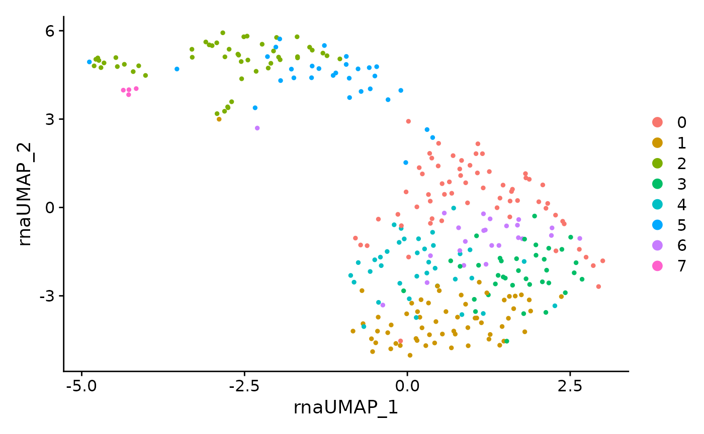
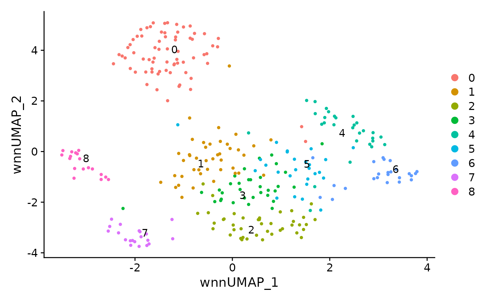
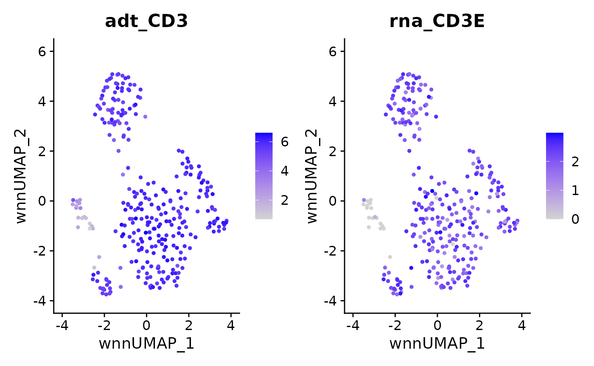
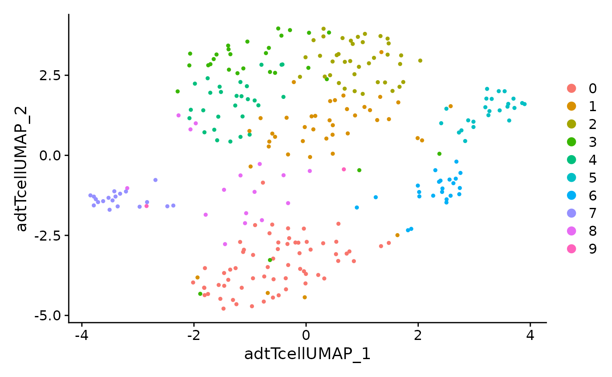
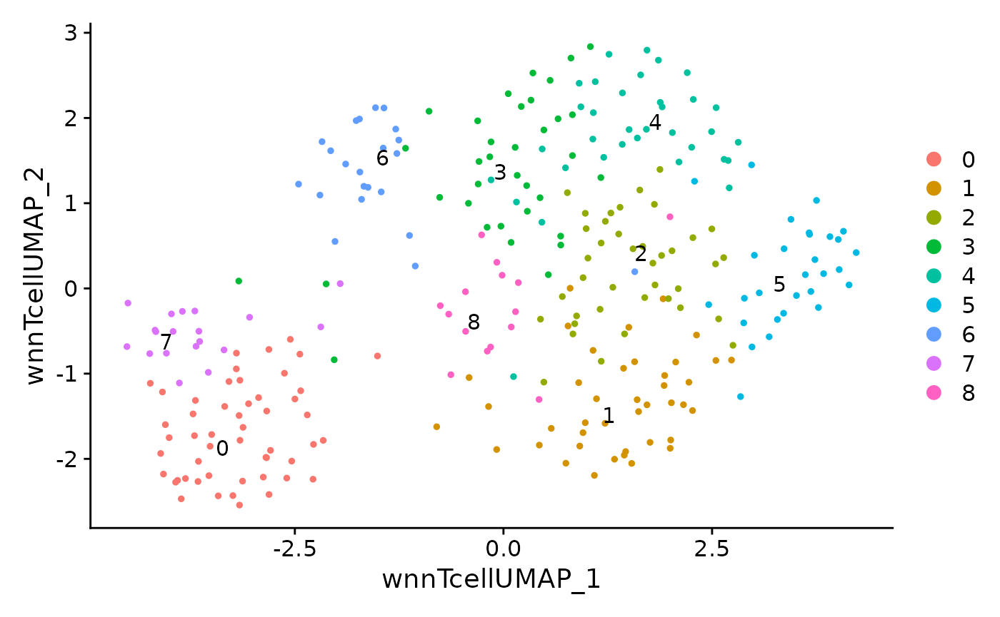

Creating MAMS from Seurat
2024-05-13
rmams_tutorial.RmdIntroduction
Matrix and Analysis Metadata Standards (MAMS) can be used to capture the relevant information about the data matrices and annotations that are produced during common and complex analysis workflows for single-cell data. This use case demonstrates how MAMS can be used to annotate matrices and annotations that are produced during the analysis of multi-modal single-cell data containing both RNA and Antibody Derived Tags (ADTs). We will analyze the PBMC 1K dataset with the Seurat package according to the Multi-modal and Weighted Nearst Neighbor vignettes. The analytical steps include:
- Importing the raw/droplet and filtered/cell matrices
- Performing quality control and further subsetting the filtered matrix to only include high-quality cells
- Clustering all cells with RNA only
- Clustering all cells with ADTs only
- Clustering all cells with both RNA and ADT
- Clustering T-cells with RNA only
- Clustering T-cells with ADT only
- Clustering T-cells with both RNA and ADT
This workflow demonstrates how different subsets of cells/observations are produced due to QC/filtering or can be made based on different biological subsets. It also produces several matrices and annotations from different modalities. Note that the goal of this workflow is less about producing the best clustering results and cell type characterization. Rather it is focused on producing data/results that is commonly generated during real-world analyses which can be annotated with MAMS. For more information about MAMS, see the GitHub repository
Step 1: Creating the Seurat object
Importing
First, we will import raw/droplet and filtered/cell matrices:
raw.matrices <- Read10X(data.dir = "../data/raw_feature_bc_matrix/")
#> 10X data contains more than one type and is being returned as a list containing matrices of each type.
data.raw <- CreateSeuratObject(counts = raw.matrices[[1]], assay = "RNA", project = "pbmc1k")
adt <- CreateAssayObject(counts = raw.matrices[[2]])
data.raw[["ADT"]] <- adt
nonempty.matrices <- Read10X(data.dir = "../data/filtered_feature_bc_matrix")
#> 10X data contains more than one type and is being returned as a list containing matrices of each type.
data.nonempty <- CreateSeuratObject(counts = nonempty.matrices[[1]], assay = "RNA", project = "pbmc1k")
adt <- CreateAssayObject(counts = nonempty.matrices[[2]])
data.nonempty[["ADT"]] <- adtQuality control
The filtered matrix will be further subsetted based on mitochondrial percentage and total number of features detected:
data.nonempty[["percent.mt"]] <- PercentageFeatureSet(data.nonempty, pattern = "^MT-")
data <- subset(data.nonempty, subset = nFeature_RNA > 200 & percent.mt < 5)Clustering
The goal of many single cell workflows are to perform clustering to identify biologically distrinct groups of cells. We will perform clustering on all QC’ed cells using RNA, ADT, or both and then also re-cluster the T-cells by themselves.
Analyzing all cells
RNA only clustering of all cells
DefaultAssay(data) <- 'RNA'
data <- NormalizeData(data) %>% FindVariableFeatures() %>% ScaleData() %>% RunPCA()
data <- FindNeighbors(data, dims = 1:10)
data <- FindClusters(data, resolution = 2, verbose = FALSE)
data <- RunUMAP(data, reduction = 'pca', dims = 1:10, assay = 'RNA',
reduction.name = 'rna.umap', reduction.key = 'rnaUMAP_')
DimPlot(data, reduction = 'rna.umap')
ADT only clustering of all cells
DefaultAssay(data) <- 'ADT'
VariableFeatures(data) <- rownames(data[["ADT"]])
data <- NormalizeData(data, normalization.method = 'CLR', margin = 2) %>%
ScaleData() %>% RunPCA(reduction.name = 'apca', dims = 1:10)
data <- FindNeighbors(data, reduction = "apca", dims = 1:10)
data <- FindClusters(data, graph.name = "ADT_snn", resolution = 2, verbose = FALSE)
data <- RunUMAP(data, reduction = 'apca', dims = 1:10,
reduction.name = 'adt.umap', reduction.key = 'adtUMAP_')
DimPlot(data, reduction = 'adt.umap')
Multimodal clustering of all cells
data <- FindMultiModalNeighbors(
data, reduction.list = list("pca", "apca"),
dims.list = list(1:20, 1:10), modality.weight.name = "RNA.weight"
)
data <- RunUMAP(data, nn.name = "weighted.nn", reduction.name = "wnn.umap", reduction.key = "wnnUMAP_")
data <- FindClusters(data, graph.name = "wsnn", algorithm = 3, resolution = 2, verbose = FALSE)
DimPlot(data, reduction = 'wnn.umap', label = TRUE, repel = TRUE)
FeaturePlot(data, features = c("adt_CD3","rna_CD3E"), reduction = 'wnn.umap')
Analysis of T-cell subset
RNA only clustering of T-cells
DefaultAssay(data.tcell) <- 'RNA'
data.tcell <- NormalizeData(data.tcell) %>% FindVariableFeatures() %>% ScaleData() %>% RunPCA(reduction.name = "pca.tcell")
data.tcell <- FindNeighbors(data.tcell, reduction = "pca.tcell", dims = 1:10)
data.tcell <- FindClusters(data.tcell, resolution = 2, verbose = FALSE)
data.tcell <- RunUMAP(data.tcell, reduction = 'pca.tcell', dims = 1:10, assay = 'RNA',
reduction.name = 'rna.tcell.umap', reduction.key = 'rnaTcellUMAP_')
DimPlot(data.tcell, reduction = 'rna.tcell.umap')
ADT only clustering of T-cells
DefaultAssay(data.tcell) <- 'ADT'
VariableFeatures(data.tcell) <- rownames(data.tcell[["ADT"]])
data.tcell <- NormalizeData(data.tcell, normalization.method = 'CLR', margin = 2) %>%
ScaleData() %>% RunPCA(reduction.name = 'apca.tcell', dims = 1:10)
data.tcell <- RunUMAP(data.tcell, reduction = 'apca.tcell', dims = 1:10, assay = 'ADT',
reduction.name = 'adt.tcell.umap', reduction.key = 'adtTcellUMAP_')
data.tcell <- FindNeighbors(data.tcell, reduction = "apca.tcell", dims = 1:10)
data.tcell <- FindClusters(data.tcell, graph.name = "ADT_snn", resolution = 2, verbose = FALSE)
data.tcell <- FindClusters(data.tcell, algorithm = 3, resolution = 2, verbose = FALSE)
DimPlot(data.tcell, reduction = 'adt.tcell.umap')
Multimodal clustering of T-cells
data.tcell <- FindMultiModalNeighbors(
data.tcell, reduction.list = list("pca.tcell", "apca.tcell"),
dims.list = list(1:10, 1:10), modality.weight.name = "RNA.weight"
)
data.tcell <- RunUMAP(data.tcell, nn.name = "weighted.nn", reduction.name = "wnn.tcell.umap", reduction.key = "wnnTcellUMAP_")
data.tcell <- FindClusters(data.tcell, graph.name = "wsnn", algorithm = 3, resolution = 2, verbose = FALSE)
DimPlot(data.tcell, reduction = 'wnn.tcell.umap', label = TRUE, repel = TRUE) The data matrices stored within a Seurat object will be saved to an “rds” file. Note that we could extract and save each matrix in a basic txt or mtx file as well.
Step 2: Creating the MAMS object from seurat object
Loading data
library(rmams)
# get the file paths of seurat objects
file_paths <- c("../data/pbmc1k_seurat_filtered.rds", "../data/pbmc1k_seurat_nonempty.rds", "../data/pbmc1k_seurat_tcell.rds")
# get the names of these objects
file_names <- gsub(pattern = "\\.rds$", replacement = "", x = basename(file_paths))
# save the seurat objects onto the object_list by reading the object from file path.
object_list <- lapply(file_paths, readRDS)
# name the list objects using previously generated file_names.
names(object_list) <- file_names
# define the type of each subset
observational_subsets<-c("filtered","nonempty","subset")
datasetid = "PBMC1K"Create MAMS object
result<- convert_seurat_to_MAMS(object_list,observational_subsets,datasetid)Accessing data
# Get the dataset_id from the first fom
fom(result,"fom1","dataset_id")
#> [1] "PBMC1K"Step 3: Validating MAMS object
check_MAMS(mams_object = result)Step 4: Saving MAMS object to JSON
write_MAMS_to_JSON(MAMS=result, filepath = "../data/pbmc1k_rna_adt_seurat_mams.json")